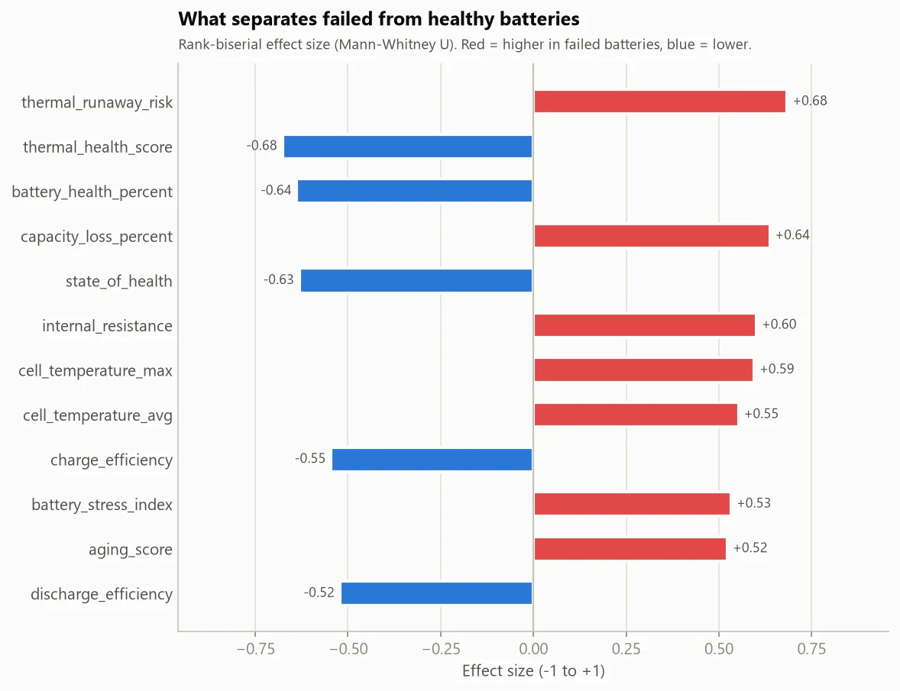
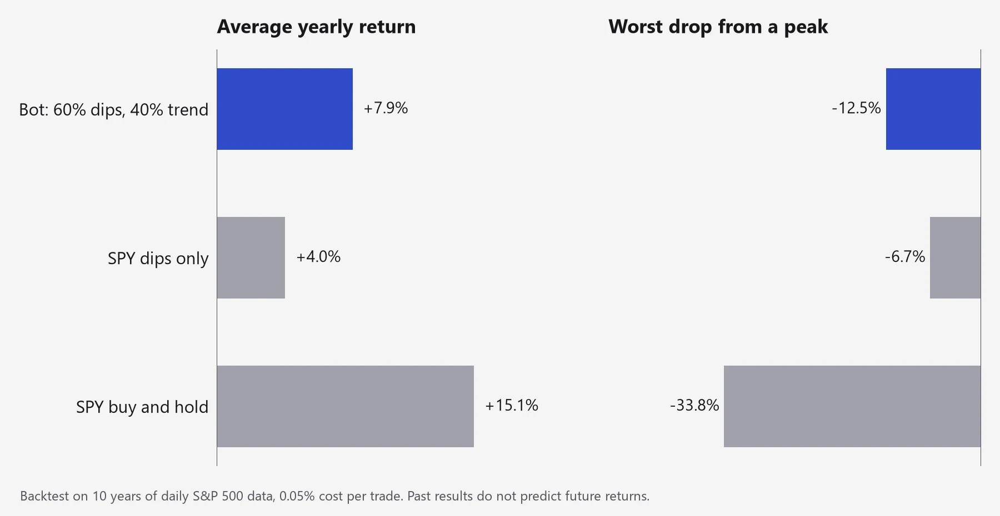
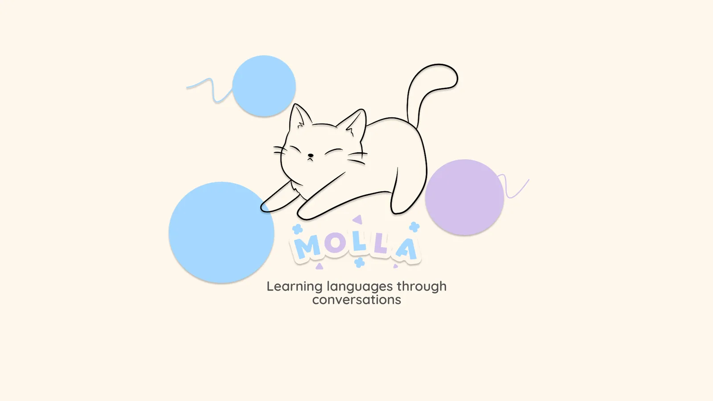

Research and projects
HCI research, AI and data tools I build to learn, and apps I wish existed.
Research
-
Experience Improvement Framework
A practical dark-pattern framework for mobile games, built from 30+ interviews and 954 qualitative codes.
-
Twitter Bot Classification
A reproducible Python workflow comparing likely-bot and likely-human sentiment in political tweets.
Publication
Moradzadeh, S., Oh, J. S., Gui, X., & Kou, Y. (2025). Fake Game but Real Play: Exploring Player Motivations and Coping Strategies with Fake Games. Proceedings of the ACM on Human-Computer Interaction, 9(6), 606-636.
Projects
-

EV Battery Failure Prediction Agent
Predicts which EV batteries are likely to fail and how much life each has left, and explains why.
-

Automated Trading Bot
A once-a-day paper-trading bot for the S&P 500, designed safety first.
Apps I wish existed
Molla: learning languages through conversation
Molla is a hybrid human-AI learning experience that teaches a language through conversation, both written and spoken. It focuses on how languages were meant to be learned: through immersion and dialogue. With a mix of AI conversations and real people, anyone can learn to speak a language in comfort.
